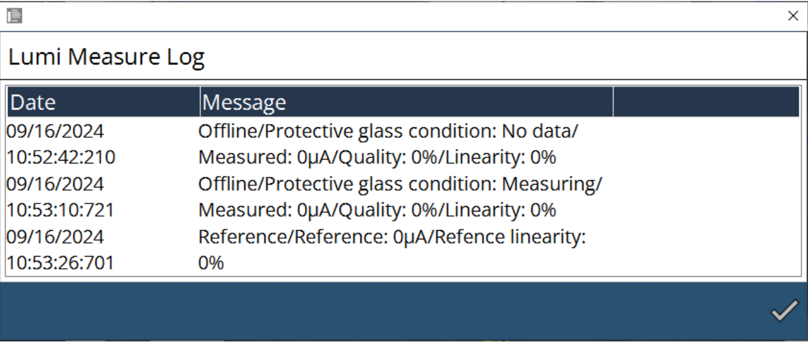
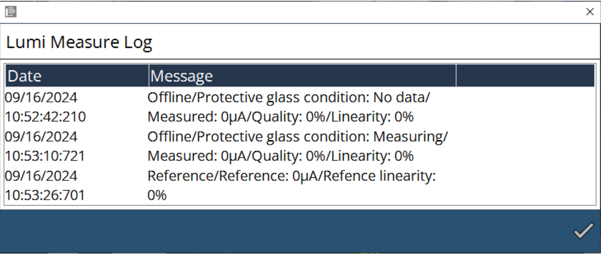

Schutzglasüberwachung
Parametrierung
Die Schutzglasüberwachung ist ein System, das den Zustand des Schutzglases überwacht. Es kann die Produktion von Teilen minderer Qualität oder sogar Maschinenschäden verhindern.
Das Verhalten ist wie folgt definiert:
-
Wenn der Qualitätswert des Schutzglases während des Schneidens unter der Fehlerschwelle liegt: Die Maschine stoppt die Bearbeitung, der Strahl schaltet sich aus und im Vordergrund der HMI wird ein Fenster angezeigt.
-
Wenn die Schaltfläche Schließen im Fenster angeklickt wird, fährt die Maschine mit dem Schneiden der aktuellen Tafel fort. Bevor die nächste Tafel bearbeitet wird, wird eine Schutzglasmessung durchgeführt. Liegt die Qualität immer noch unter der Fehlerschwelle, wird das Fenster erneut angezeigt. Wenn Sie auf „Schließen“ klicken, kann die Maschine mit der Bearbeitung fortfahren, und das Fenster erscheint am Ende der Tafel erneut.
-
Wenn das Glas von Anfang an verschmutzt ist, stoppt die Maschine nach dem Schneiden der ersten Kontur und führt eine Schutzglasmessung durch. Liegt die Qualität unter der Fehlerschwelle, wird ein Fenster angezeigt. Wenn die Schaltfläche Schließen angeklickt wird, erlaubt das der Maschine die Fortsetzung des Schneidens der aktuellen Tafel.
Es ist sowohl eine Offline-Messung als auch eine Online-Messung möglich:
| Offline-Messung | Online-Überwachung | |
|---|---|---|
Messart |
Feste Messbedingungen |
In-situ-Messung |
Trigger |
Relative Grenze zum sauberen Referenzwert |
Relative Grenze zum sauberen Referenzwert |
Wirkung |
Ergebnis in Prozent |
Reaktion am Konturende |
Zweck |
Verhindert die Produktion von Materialschrott |
Löst Offline-Messung aus |
Offline-Messung: Die Offline-Messung wird verwendet, um die Glasqualität unter stabilen Bedingungen zu überprüfen. Bei der Offline-Messung wird Laserleistung auf drei verschiedenen Stufen emittiert, jeweils für einen bestimmten Zeitraum – üblicherweise 500 ms. Das vom Glas reflektierte Licht wird bei jeder Leistungsstufe gemessen, und es wird die normierte Reflexionshelligkeit berechnet und mit einem Referenzwert verglichen, der mit der gleichen Methode ermittelt wird. In diese Berechnung wird auch ein Offline-Grenzwert einbezogen, um die Glasqualität zu bestimmen. Bei gleichem Reflexionshelligkeitswert deutet ein höherer Grenzwert auf bessere Glasqualität hin. Daher wird nur bei erheblicher Verschmutzung des Glases eine Warnung bzw. eine Fehlermeldung getriggert.
Online-Überwachung: Mit der Online-Messung wird die Glasqualität beim Schneiden überprüft. Immer wenn Laserleistung vorhanden ist, wird der Mittelwert des reflektierten Lichts über einen Zeitraum berechnet, und auf diesen Wert wird ein Tiefpassfilter angewendet. Dann wird der Online-Grenzwert berücksichtigt, um die endgültige Glasqualität zu bestimmen. Aufgrund der Instabilität der Laserleistung und der Rückreflexion der geschnittenen Tafel liegt der Online-Grenzwert erheblich über dem Offline-Grenzwert.
Die Parametrierung erfolgt auf der Einstellungsseite:

Luminositätsmessung
Die Schutzfenstermessung basiert auf einer Luminositätsmessung. Wenn der Zustand Sauber ist, erlaubt der Status des Schutzfensters das Fortsetzen des Schneidens im Hinblick auf gute Schneidergebnisse. Wenn der Zustand Kontaminiert ist, ist der Status des Schutzfensters unzureichend und es ist ratsam, das Schutzfenster auszuwechseln, um gute Schneidergebnisse zu erzielen.

Reinigen oder ersetzen Sie das Schutzglas, je nach Prozentsatz des Qualitätswerts.
-
80 % - 90 % → sauber
-
< 80% → ersetzen
Mit den obigen Eingaben bewegen sich die X-Achse und die Y-Achse auf den positionierten Wert zu.
Beim Ausführen des Programms werden die Daten von Frequenz und Tastverhältnis gemäß den Bedieneranforderungen befolgt. Der Leistungsparameter ist vordefiniert als aufsteigender Schritt von 500 W, 1000 W und 1500 W.
Fokusdurchmesser, Fokusabstand und Verweilzeit wurden ebenfalls entsprechend den Bedieneranforderungen modifiziert. Eingegebene Werte können während des Programmablaufs überwacht werden. Die angegebene Verweilzeit hält das Programm bis zur konfigurierten Verweilzeit an, und dann erfolgt der Abbruch.
Der Messmodus verfügt über Offline- und Referenzdaten. In der Offline-Auswahl kann der Bediener das Programm ausführen und den Status des Schutzfensters überprüfen. In der Referenzauswahl kann der Bediener die Daten und Werte von Qualität und Linearität überprüfen und sie mit der Option Speichern speichern. Im Allgemeinen wird die Referenzauswahl ausgewählt, wenn das Schutzfenster neuer ist, was gute Ergebnisse liefert.
Wenn das Luminositätsmessprogramm läuft, protokolliert es die Daten, die in LumiMeasurelog.txt über den Pfad C:\ProgramData\Metamation{APPNAME}\Log\Currentyear\Currentmonth\Currentday oder in der Bedienoberfläche gelesen werden können.
 

Bezüglich der obigen Berechnung werden zur Optimierung der Überwachungsfunktion in der MK-Datei die folgenden Parameter hinzugefügt:
-
Offline-Grenzwert Lumi-Messung
-
Online-Grenzwert Lumi-Messung
-
Warngrenze in Prozent
-
Fehlergrenze in Prozent
-
Zeitverzögerung für Warnmeldung in Sekunden